Ein Industrie-Roboterarm aus den 1980er-Jahren, dessen Steuerung verloren gegangen war. In einem vierwöchigen Praktikum an der Hochschule Düsseldorf habe ich Elektronik und Software komplett neu aufgebaut. Ohne Pläne oder Originalsoftware musste ich herausfinden, wie der Arm aufgebaut ist, die Elektronik auswählen und die Steuerung von Grund auf neu programmieren. Am Ende erkannte der Arm Würfel mit einem ToF-Sensor, griff sie und stapelte sie aufeinander.
Ausgangslage
Der Cobra RS ist ein Roboterarm von Sekuria aus den 1980er-Jahren und gehört der Hochschule Düsseldorf. Die Mechanik war vollständig erhalten, die sechs Philips-ID35-Stepper waren noch eingebaut und bereits verkabelt. Die Steuerung fehlte dagegen komplett: kein Treiber, kein Controller und keine Originalunterlagen. Der Arm ließ sich nicht bewegen.
Das vierwöchige Praktikum absolvierte ich im Rahmen meiner Berufsausbildung an der Lore-Lorentz-Schule, betreut von Prof. Ralf Beck und Mario Meilchen im Fachbereich Elektro- und Informationstechnik. Das Projekt hatte ich vorher bei einem Besuch an der HSD mit den beiden ausgesucht. Meine Aufgabe war, die Hardware auszuwählen, zu verdrahten und die Firmware selbst zu schreiben, bis sich der Arm wieder bewegt und über verschiedene Schnittstellen steuern lässt. Weil es keine Unterlagen mehr gab, musste ich vieles am Arm selbst nachvollziehen und ausmessen.
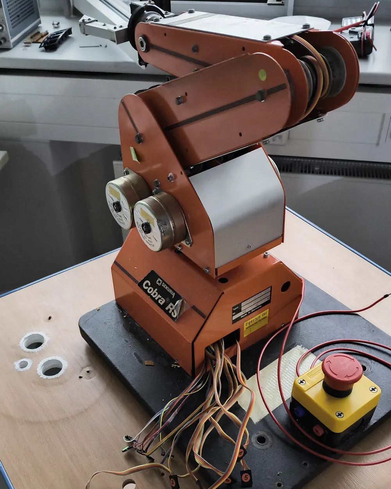
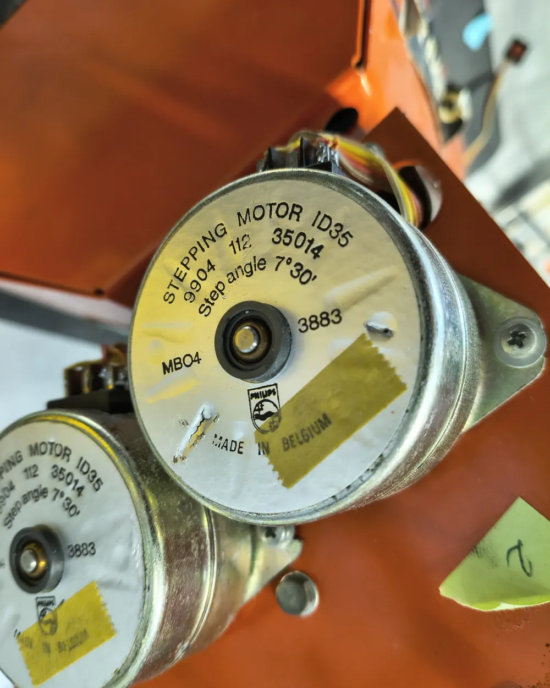
Mechanik verstehen
Bevor ich eine Zeile Kinematik schreiben konnte, musste ich herausfinden, wie der Arm mechanisch funktioniert. Er hat sechs Stepper, aber nur fünf Bewegungsachsen: Der sechste Motor schließt den Greifer, geöffnet wird er von einer Feder.
Riemenantrieb und entkoppelte Achsen
Die Motoren sitzen nicht in den Gelenken, sondern unten am Arm. Die weiter außen liegenden Gelenke werden über Zahnriemen entlang der Armglieder angetrieben. Diese Riemenführung sorgt dafür, dass die Achsen mechanisch entkoppelt sind: Jeder Winkel ist absolut zur Horizontalen definiert und nicht relativ zum vorherigen Glied. Fährt die Schulter, behält die Hand ihre Orientierung.
Wie alt die Riemen waren, zeigte sich in der vorletzten Woche: Der Riemen der Schulter zerbröselte, die übrigen waren kurz davor. Wir haben das Profil vermessen (T5), und als am Montag darauf der Ersatz kam, habe ich den Arm auseinandergebaut und die Riemen getauscht.
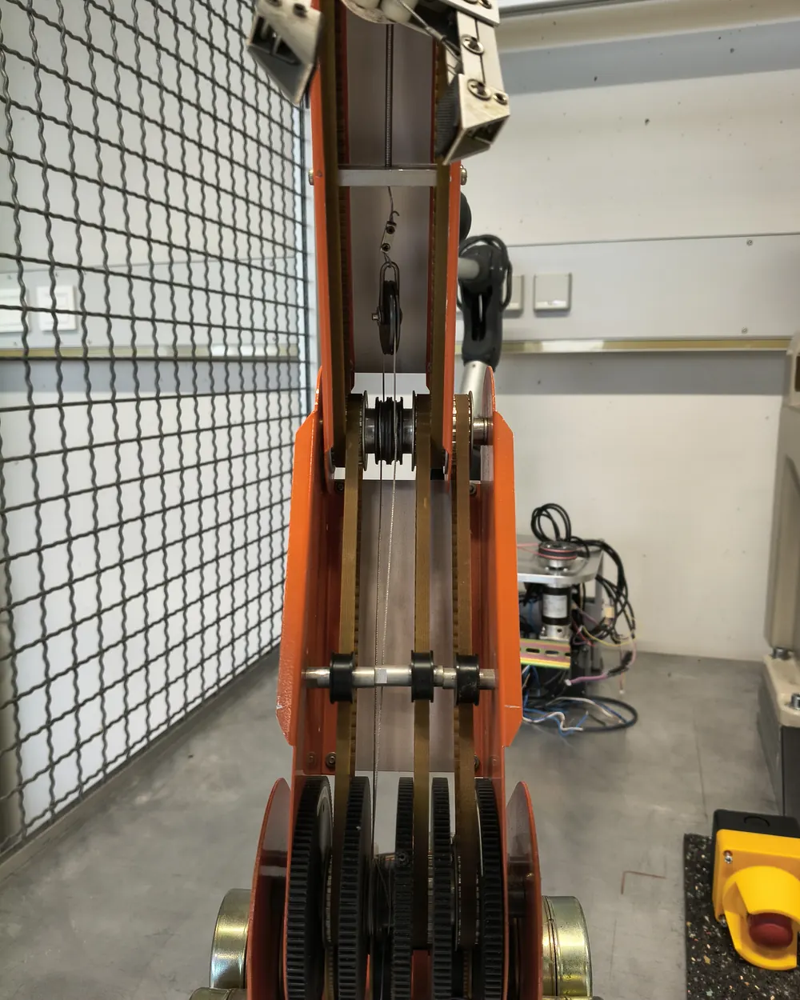
Differential-Handgelenk
Pitch und Roll der Hand erzeugen beide Handgelenksmotoren gemeinsam über ein Kegelrad-Differential. Drehen beide gleichsinnig, entsteht reiner Pitch, drehen sie gegenläufig, reiner Roll. Die Firmware rechnet deshalb aus Pitch und Roll erst die beiden Motorwinkel aus:
θM5 = Pitch − Roll Vorzeichen empirisch festgelegt
Die Vorzeichen habe ich am Arm ausprobiert, weil sie von Einbaurichtung und Verdrahtung abhängen. Einen freien Yaw der Hand gibt es nicht, der kommt nur über die Drehung der Basis.
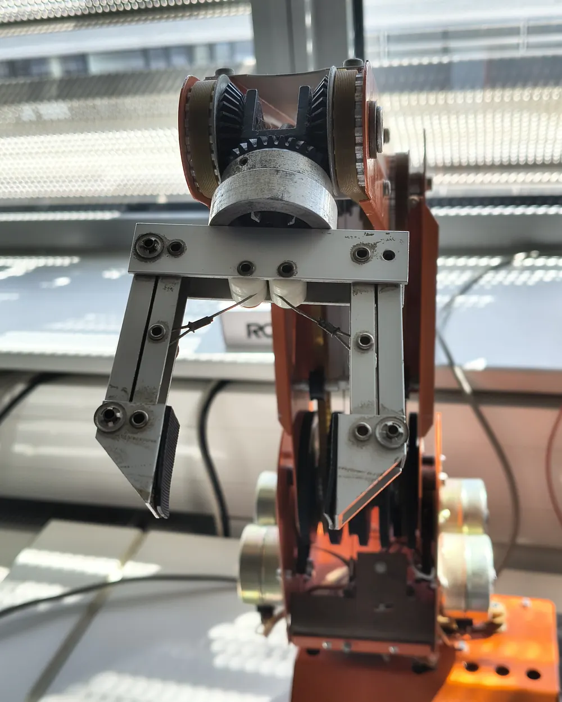
Hardware
| Controller | Waveshare ESP32-P4-ETH, kabelgebundenes Ethernet |
|---|---|
| Treiberboard | Stepperboard für den Odroid M1, verteilt die Versorgung an alle Treiber |
| Treiber | 6× TMC2209, STEP/DIR + UART |
| Motoren | Philips ID35, 12 V, 7,5°/Schritt (48 Schritte/U), bipolar betrieben |
| Versorgung | 18 V |
| Microstepping | 16 → 768 Microsteps/U |
| Homing | optischer Reflexsensor (CNY70/TCRT5000-Typ) pro Gelenk |
| Umgebungssensor | VL53L1X ToF-Sensor an der Hand, I²C |
Als Controller dient ein ESP32-P4-ETH. Kabelgebundenes Ethernet statt WLAN war ein Wunsch der Hochschule. Die sechs TMC2209 sitzen auf einem Stepperboard, das eigentlich für den Odroid M1 gebaut ist. Es verteilt die Versorgung an alle Treiber. So musste ich nicht jeden Treiber einzeln anschließen, und die Verkabelung blieb übersichtlich. Über UART lassen sich Motorstrom und Microstepping per Software einstellen.
Die ID35 sind 6-Draht-Motoren. Sie waren bereits bipolar über die vier äußeren Adern verkabelt, so konnte ich sie direkt an die TMC2209 anschließen. Versorgt wird alles mit 18 V statt der 12 V Nennspannung der Motoren. Die höhere Spannung bringt mehr Leistung und damit flüssigere Bewegungen.
Für die Elektronik habe ich in Fusion 360 einen Montagerahmen konstruiert und gedruckt, der auf die Grundplatte des Arms geschraubt wird. Controller, Stepperboard und Steckbrett haben darin jeweils einen festen Platz, sodass alles sauber sitzt und nichts lose auf dem Tisch liegt.
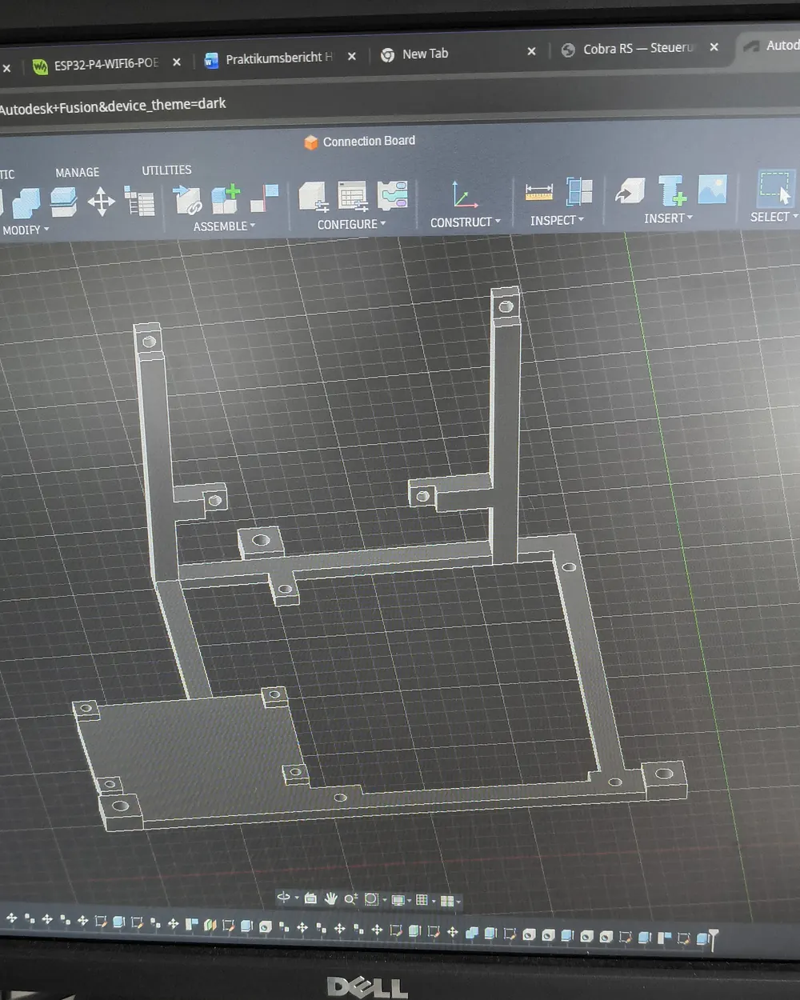
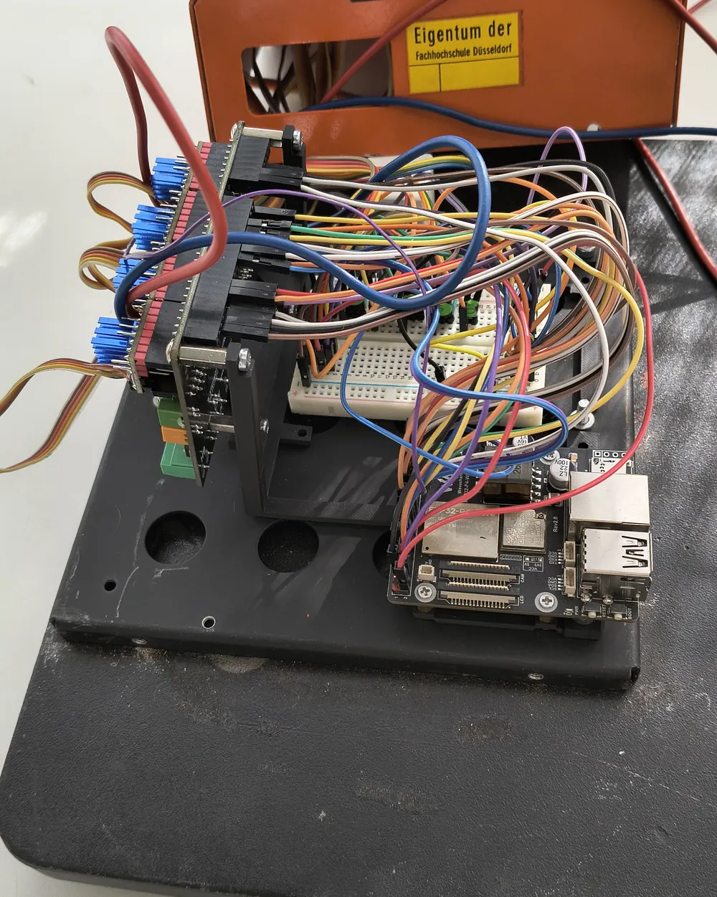
Kernentscheidungen
Schrittgenerierung
Ein Stepper bewegt sich nur, wenn er für jeden Schritt einen Impuls bekommt. Bei 16 Microsteps sind das 768 Impulse pro Motorumdrehung, und die Abstände dazwischen müssen gleichmäßig sein, sonst läuft der Motor unruhig. Die Bibliothek FastAccelStepper erzeugt diese Impulse nicht in Software, sondern über das RMT-Modul des ESP32. Das sind eigene Hardware-Einheiten, die die Impulse selbstständig ausgeben, während der Prozessor etwas anderes erledigt.
Geplant war, alle sechs Motoren so anzusteuern. Die Fehlermeldungen zeigten dann aber, dass mir auf dem ESP32-P4 nur vier RMT-Kanäle zur Verfügung standen. Ich habe die Motoren deshalb aufgeteilt: Die Motoren 1 bis 3 und der Greifermotor 6 laufen hardware-getimt über FastAccelStepper. Die beiden Handgelenksmotoren 4 und 5 steuert AccelStepper, das die Impulse in Software in einem eigenen FreeRTOS-Task erzeugt. Das Handgelenk muss weder schnell fahren noch schnell reagieren, deshalb konnte ich dort am ehesten auf die Hardware verzichten. Der Nachteil ist am Arm sichtbar: Die Handgelenksachsen fahren langsamer als die übrigen. Damit der Rest der Firmware nicht wissen muss, welche Bibliothek hinter einem Motor steckt, habe ich beide in gemeinsame Funktionen verpackt.
Der ESP32-P4 hat zwei Kerne. Auf Core 0 läuft der Webserver, auf Core 1 die Bewegungssteuerung. So bremst eine Anfrage an das Web-Interface keine laufende Bewegung aus, und umgekehrt blockiert eine Bewegung nicht den Webserver.
Treiber-Tuning
Der TMC2209 hat zwei Betriebsarten. StealthChop ist leise, liefert bei höherer Drehzahl aber weniger Drehmoment, SpreadCycle ist lauter und kräftiger. An fast allen Achsen reichte StealthChop. Nur die Schulter, Motor 2, hat Schritte verloren, wenn der restliche Arm nach vorne ausgestreckt war, weil sie dann das meiste Gewicht hält. Für diese Achse schaltet der Treiber deshalb ab einer bestimmten Geschwindigkeit auf SpreadCycle um.
Den Laufstrom habe ich auf 240 mA gesetzt, den Wert aus dem Datenblatt des ID35. Im Dauerbetrieb wurden die Motoren warm. Deshalb senkt der Treiber den Strom im Stillstand auf etwa 30 %.
StallGuard nur am Greifer
Der TMC2209 kann über StallGuard erkennen, wann ein Motor blockiert, ohne zusätzlichen Sensor. Die Idee war, damit Kollisionen an den Armachsen zu erkennen. In der Praxis löste aber ständig einer der Motoren aus, fast unberechenbar. Das Problem ist, dass jede Achse je nach Pose unterschiedlich viel Kraft braucht. Ein Schwellwert, der in einer Stellung passt, ist in der nächsten zu empfindlich oder zu unempfindlich. Das für jede Achse und jede Pose zu kalibrieren, wäre im Rahmen des Praktikums zu aufwendig gewesen. Ich habe StallGuard an den Armachsen deshalb abgeschaltet.
Am Greifer habe ich StallGuard behalten. Dort stoppt es den Motor, sobald der Widerstand durch den gegriffenen Würfel zu groß wird. Den Schwellwert habe ich gefunden, indem ich den Greifer zuerst ohne StallGuard schließen ließ und dabei die gemessenen Werte mitgelesen habe.
Funktionen
Homing und Kalibrierung
Ein Stepper weiß nach dem Einschalten nicht, wo er steht. Deshalb sitzt an jedem Gelenk ein optischer Reflexsensor, der auf ein Riemenrad mit einem weißen Streifen schaut. Beim Homing fahren die Achsen 1 bis 6 nacheinander bis zur Kante zwischen Schwarz und Weiß: erst schnell, dann ein Stück zurück und ein zweites Mal langsam, damit der Referenzpunkt genauer wird. Die nötigen Pull-up-Widerstände saßen ursprünglich auf der alten Anschlussplatine, deshalb habe ich auf dem Steckbrett 10-kΩ-Pull-ups auf 3,3 V gesetzt.
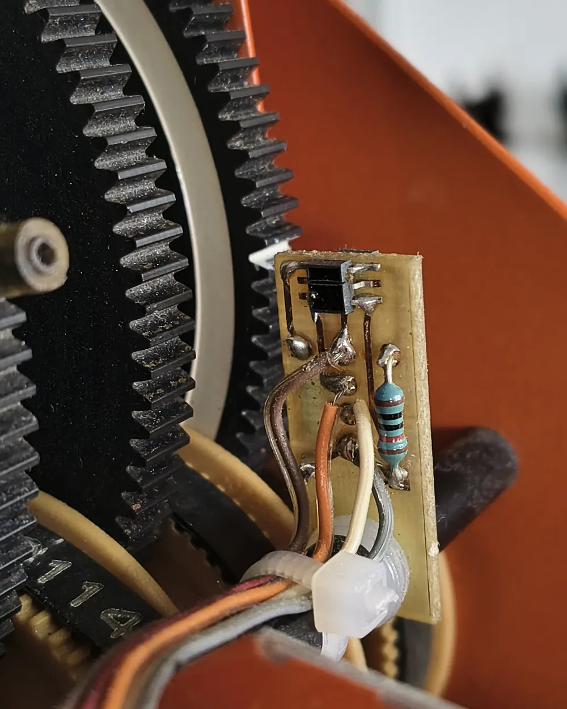
Welcher Winkel am Referenzpunkt anliegt, habe ich für Schulter und Ellbogen mit einer Wasserwaagen-App gemessen: 33,5° über der Horizontalen. Das Vorzeichen hatte ich zuerst falsch, gemerkt habe ich es, weil der Arm in die falsche Richtung fuhr.
Kinematik
Die Vorwärtskinematik habe ich selbst hergeleitet und programmiert, die inverse Kinematik mit Hilfe von KI gelöst. Für die Position reicht eine 3R-Kinematik aus Basis, Schulter und Ellbogen, die Orientierung der Hand kommt über die Differential-Mischung dazu. Die entkoppelten Achsen machen die Rechnung einfacher: Die Richtung eines Armglieds ergibt sich direkt aus seinem eigenen Winkel und nicht aus der Summe aller vorherigen.
Beim Fahren kamen zwei Punkte dazu. Damit der Arm nicht weit ausholt oder eckig fährt, bewegt sich die Achse mit dem weitesten Weg mit voller Geschwindigkeit und die übrigen proportional langsamer, sodass alle gleichzeitig ankommen. Außerdem prüft die Firmware alle Winkel gegen die Achsgrenzen, bevor sich ein Motor bewegt. Ein unerreichbarer Punkt wird übersprungen, statt die Achsen unkontrolliert fahren zu lassen.
Web-Interface
Auf dem ESP32 läuft ein Webserver mit einer Steuerseite. Darüber übergebe ich dem Arm eine Tabelle mit Punkten, die er nacheinander abfährt, verfahre einzelne Achsen direkt und sehe die Achswinkel live. Beim direkten Verfahren sendet die Seite alle 200 ms ein Lebenszeichen, bleibt es 500 ms aus, stoppt der Motor. Hinter der Seite liegt eine REST-API, die auch andere Programme nutzen können.
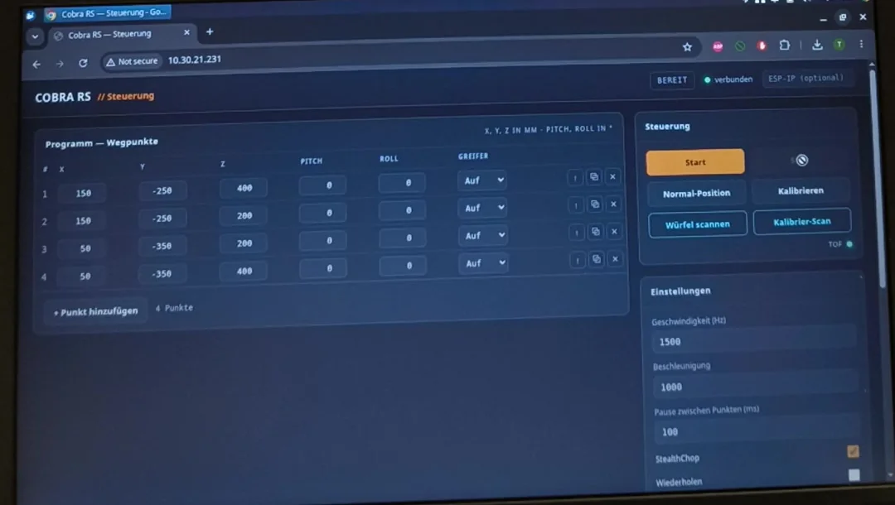
ROS2 und digitaler Zwilling
ROS2 habe ich für das 3D-Modell und die Würfelerkennung genutzt. Die Programme laufen auf einem Laptop und holen sich die Daten über dieselbe REST-API wie das Web-Interface. Das war einfacher als micro-ROS auf dem ESP32. Das 3D-Modell habe ich in Fusion 360 selbst konstruiert, die einzelnen Teile als COLLADA (.dae) exportiert, damit rviz2 die Farben darstellt, und in einer URDF-Datei wieder zu einem beweglichen Arm zusammengesetzt. Es bewegt sich live mit dem echten Arm mit. Dafür werden die Winkel umgerechnet, weil die Firmware absolut zur Horizontalen rechnet und das Modell relativ zum vorherigen Glied.
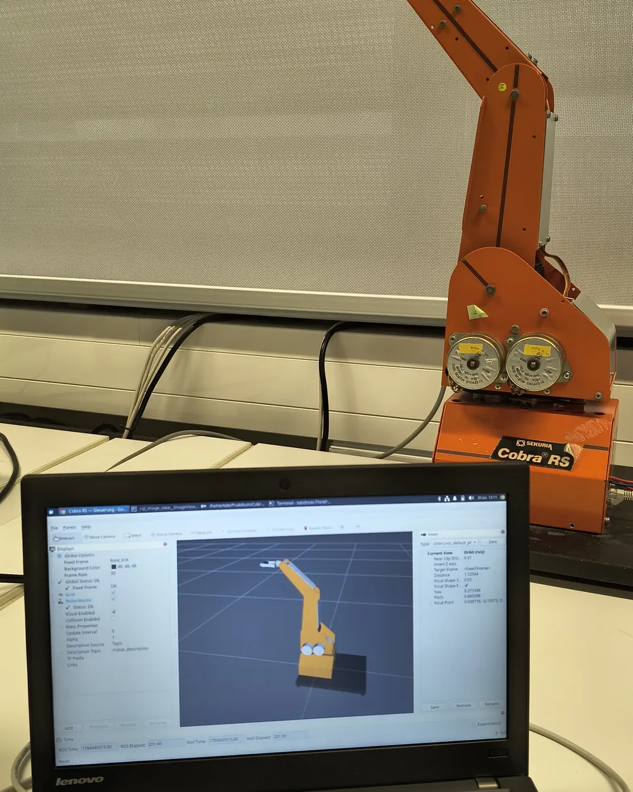
Würfelerkennung mit dem ToF-Sensor
Am Greifer sitzt in einer selbst gedruckten Halterung ein VL53L1X, ein Time-of-Flight-Sensor, der Abstände über die Laufzeit von Licht misst. Ausgewählt habe ich ihn, weil ich ihn zu Hause hatte und schon aus Interesse damit experimentiert hatte. Sein Messfeld lässt sich in 4×4 Zonen aufteilen. Der Arm fährt vier Punkte über dem Tisch an und nimmt an jedem ein Tiefenbild mit 16 Werten auf.
Schon der leere, flache Tisch sah darin wie eine Schüssel aus, weil die äußeren Zonen schräg auf den Tisch schauen. Statt das mit Trigonometrie zu korrigieren, was bei den ungenauen Blickwinkeln der Zonen schlecht funktioniert, nimmt der Arm vorher eine Referenz des leeren Tischs auf und zieht sie beim Scan ab. Übrig bleibt nur, was über den Tisch hinausragt. Aus diesen Zonen berechnet ein ROS2-Programm die Position des Würfels, dann fährt der Arm hin, greift und stapelt. Statt der anfangs schwarzen Würfel habe ich weiße verwendet, weil sie das Licht des Sensors besser reflektieren.
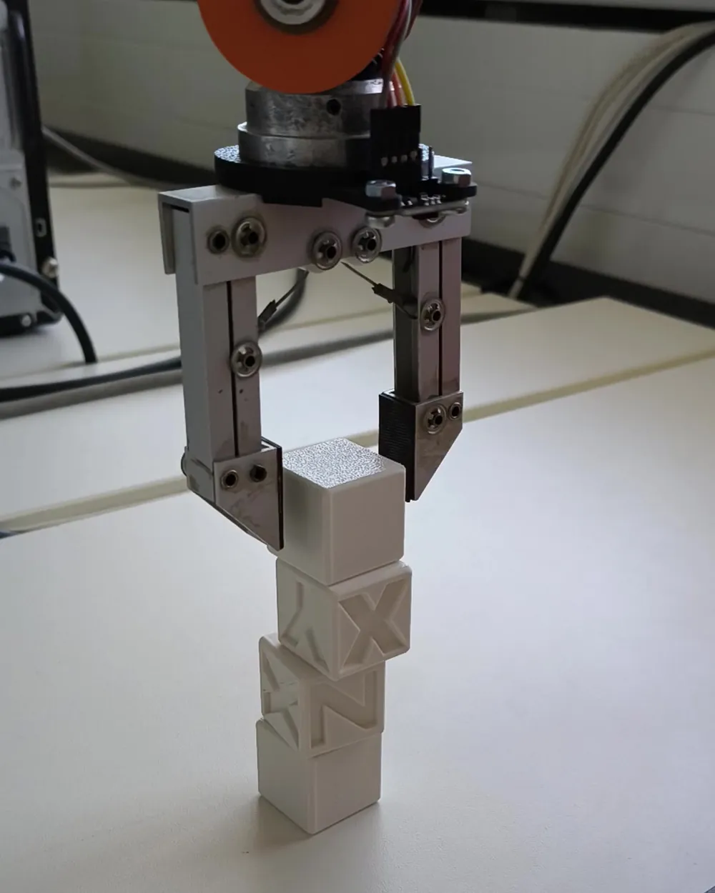
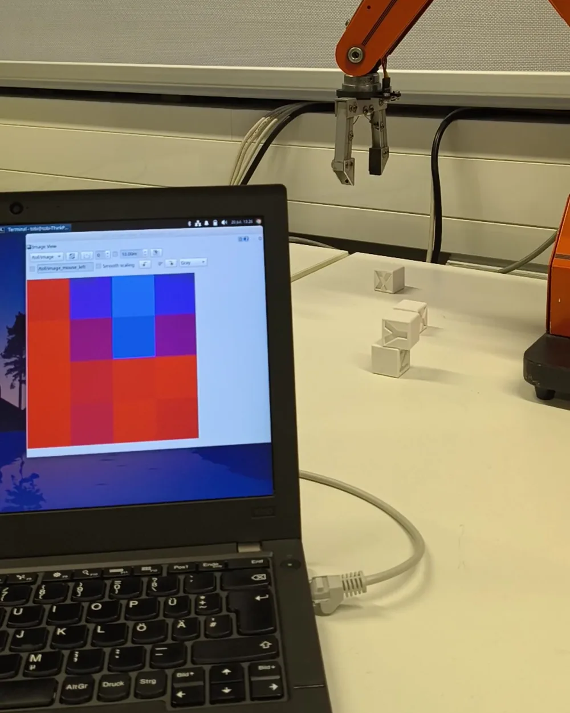
Ergebnis
Am Ende ließ sich der Arm über das Web-Interface steuern, und ein ROS2-Programm auf dem Laptop übernahm die Würfelsuche. Mit dem ToF-Sensor an der Hand fährt der Arm den Tisch ab, erkennt Würfel, bestimmt ihre Position, greift sie und stapelt sie aufeinander. Bei vier Würfeln auf dem Tisch fand er im ersten Durchgang meistens drei, den vierten manchmal im zweiten Durchgang.
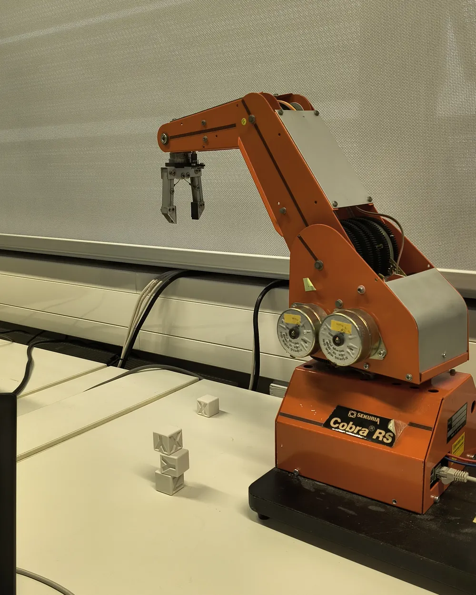
Was ich gelernt habe
Am meisten gelernt habe ich, dass Messen und Testen am echten Arm zuverlässiger ist als jedes Durchdenken. Ich ging davon aus, dass nur das Handgelenk entkoppelt ist, hielt den Oberarm für länger als den Unterarm und hatte beim Home-Winkel das Vorzeichen falsch. Aufgedeckt hat das jedes Mal erst das Ausprobieren am Arm. Beim ToF-Sensor war es ähnlich: Eine Referenzaufnahme des leeren Tischs war einfacher und zuverlässiger, als die Verzerrung zu berechnen. Oft ist Kalibrieren einfacher als Berechnen.
Wie wichtig ein Not-Aus ist, habe ich beim Fehler in der Werkzeuglänge gemerkt. Durch das falsche Vorzeichen fuhr der Greifer 148 mm tiefer als geplant und damit in den Tisch. Am Arm war zum Glück ein Not-Aus-Taster angeschlossen.
Beim nächsten Projekt würde ich am Anfang genauer festlegen, was das Ziel ist und was welche Schnittstelle können soll. Die direkte Steuerung einzelner Achsen kam erst kurz vor Ende des Praktikums dazu. Beim nachträglichen Einbau sperrten sich die neuen Buttons zuerst selbst: „Motor läuft“ und „Programm läuft“ waren ein gemeinsamer Zustand, und die Oberfläche brach die Bewegung nach einer halben Sekunde wieder ab. Erst zwei getrennte Zustände lösten das.
Für das Studium nehme ich mit, wie sehr mich Konstruktion interessiert. Das wusste ich eigentlich schon, das Praktikum hat es mir aber wieder gezeigt, beim Montagerahmen, der Sensorhalterung und dem 3D-Modell. Riemen, Übersetzungen und ein Kegelrad-Differential habe ich hier am echten Objekt verstanden statt nur auf dem Papier.